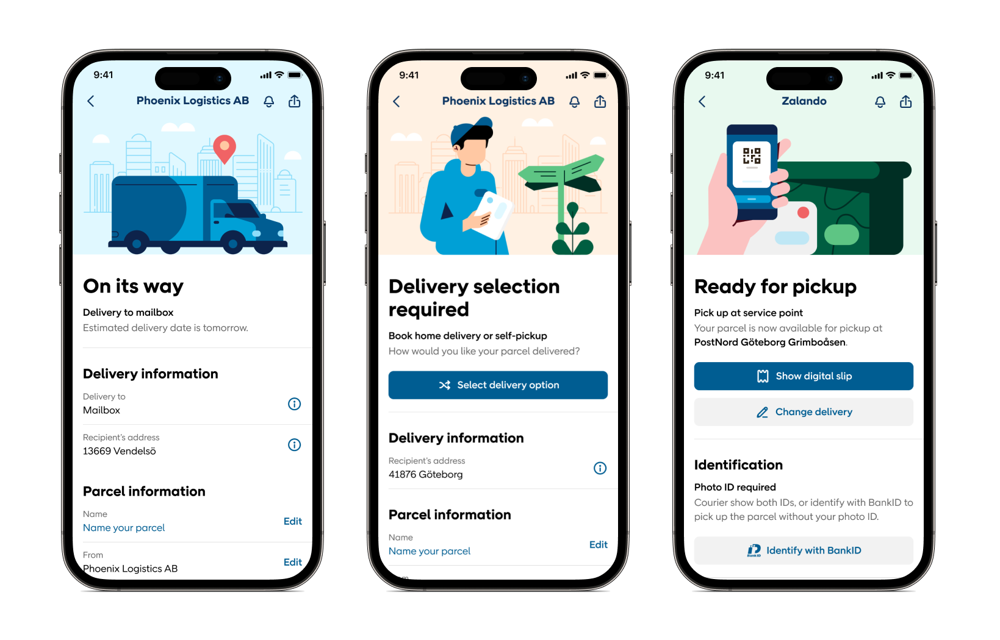
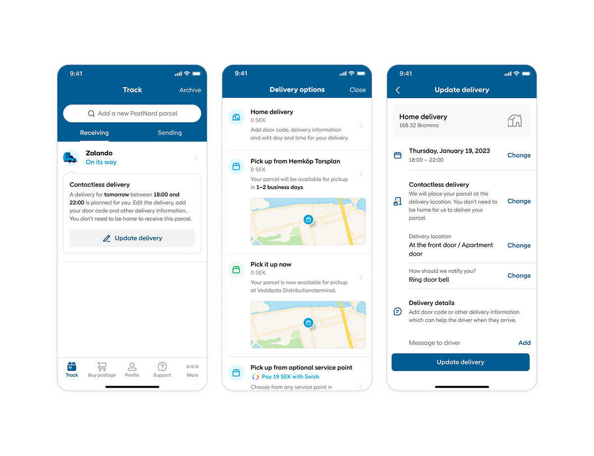
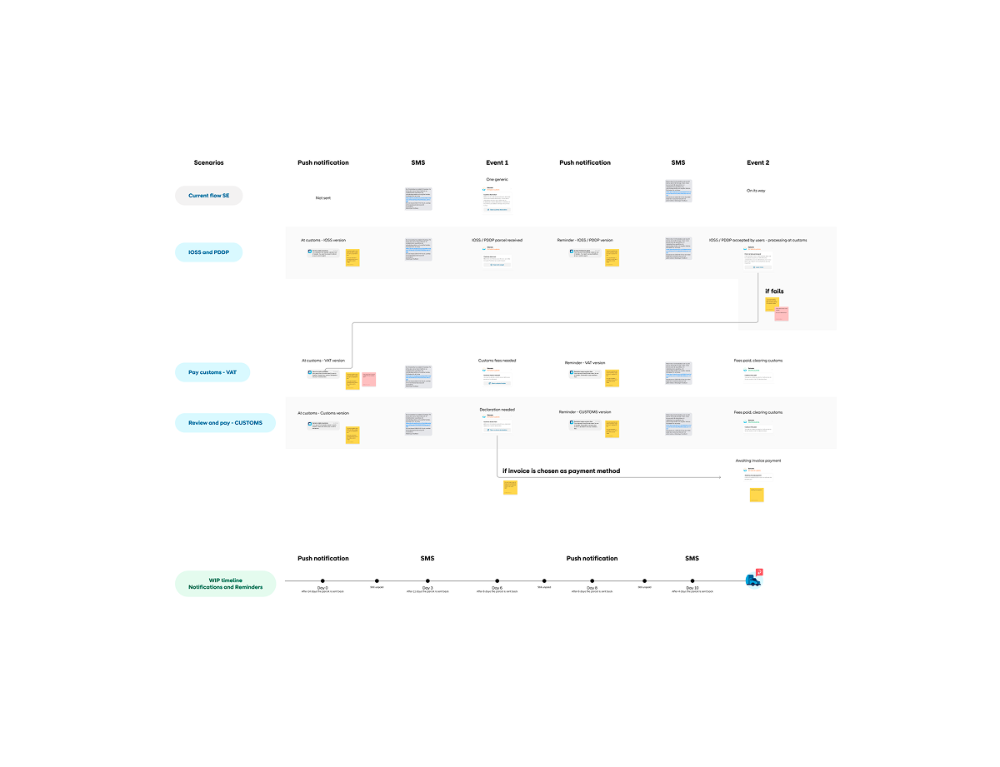
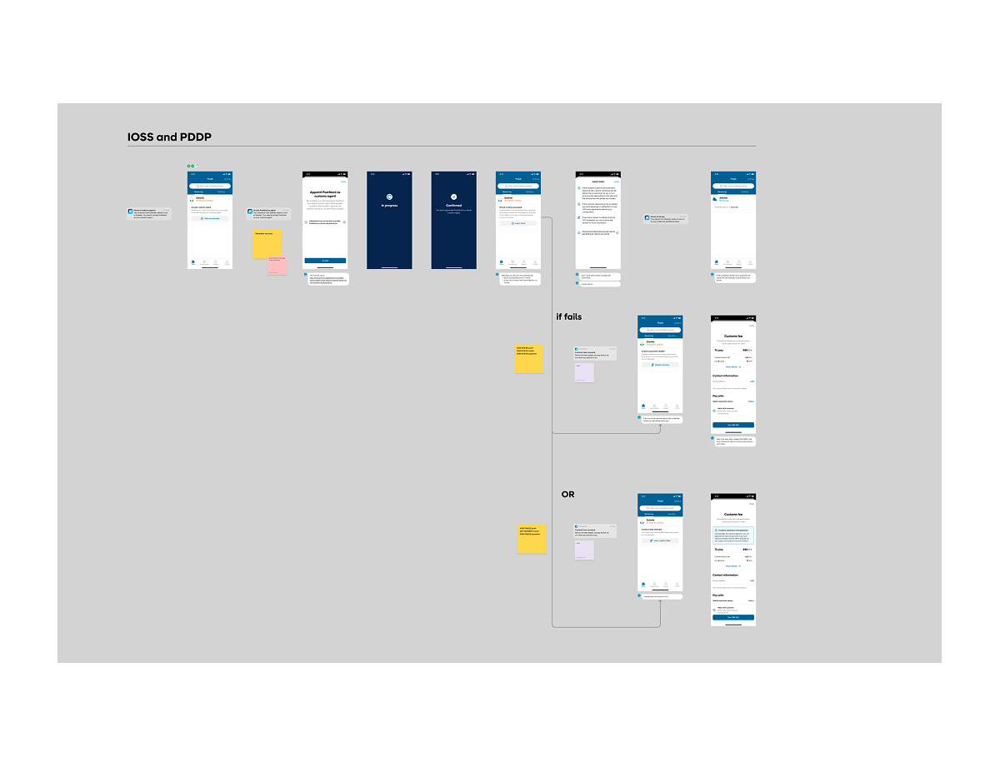

Simplifying a complex logistics experience
PostNord is Scandinavia's leading postal and logistics provider. Over three years I worked on their consumer app through continuous UX challenges and improvements, Team lead responsibilities, and tight collaboration within a team of 30 people. In-depth case study PDF upon request.
Three years on the PostNord app: continuous improvement, then redesign: Making a technically complex logistics product feel simple and reliable over time.

PostNord's app operates in a very complex environment where users expect clarity and reliability regardless of what is happening behind the scenes. Handling backend limitations, legacy issues, multiple stakeholders and needs in different markets was part of my daily work. But with millions of users relying on the service, I had to make sure all steps of the UX felt smooth and understandable.
Main hurdles across the system
- Sustain a consistent deign within a vast multitude of ux flows and edge cases
- Work around fragmented backend systems and technical constraints
- Constant alignment with other teams in order to create one, coherent experience
I worked primarily as a UX lead in my team. For a period I also worked as Team lead, a role I later chose to step back from in order to return to more hands-on UX work, where my heart fully is.
UX & Product
- Led UX for tracking parcels, such as re-routing parcels flows and editing delivery settings
- Designed onboarding and app migration flows
- UX of complex validation flows such as: add and verify addresses, phone numbers, identity verification
- Logic mapping of VAT & customs flows, push notification logic across different products
- Weekly usability testing throughout 3 years
- Collaborated with data scientists on A/B testing
Leadership
- As Team lead I owned stand-ups, sprint planning, reviews, and retros
- Coordinated across product, tech, and business stakeholders
- Supported milestone planning and delivery
PostNord being a complex logistics app, it was fundamental to build an understanding of the business needs before designing. My priority was to always align with different product owners to understand the business impact of seemingly small changes, or the need for new features. These discussions led to U turns or shaped new approaches that wouldn't have been possible without collaboration (and a dose of constructive pushbacks).
Designing within constraints
In my role I was in constant contact with engineers: backend specialists, devs for iOS and Android platforms. Rather than designing idealised flows, my focus was on understanding backend limitations and shaping solutions that were feasible and stable.
Continuous user-centred iteration
Weekly usability testing ran throughout the project. I was validating ideas early, identifying friction in both large and small changes together with UI and Copy. This created a tight loop between design work and actual user behaviour.
Tracking is the most used and inherently complex part of the app. Users need to understand what is happening with their delivery and what, if anything, they need to do next (even when the underlying systems are unable to give feedback). The priority of my design work was on reducing cognitive load in delivery-related choices, clarifying statuses and next steps, and improving the logic of key journeys.

A significant part of the work involved translating operational complexity into experiences that felt easy. This meant working closely with domain experts to understand processes most designers rarely encounter: VAT and customs handling, BankID-based identity verification, address ownership, and multi-channel notification logic. Each area required detailed system mapping before any design work could begin, followed by information architecture and interaction design across the many edge cases involved.


After years of design iterations, the team came to a tipping point: the system was not scalable anymore, requests and new features made it so that screens became overwhelming. We were not able to allocate the right information in the right place and the UX was collapsing.
Our team proposed a redesign project to PostNord, a much needed update that could accomodate this new reality, and their new product strategy.
I lead the design planning across several months and was responsible to frame the overall UX experience. With simplicity and scalability in mind,
I designed to tackle issues the team had been seeing for years. The proposed design was iterated and approved with PostNord, and our team started a full app redesign, with UI, UX and dev involved. However, after 10 years of collaboration with Framna (and short before the new app launch) PostNord created an inhouse team and took over
the project.
What I did
Senior UX designer and team lead, working on continuous app improvement, tracking and account flows, identity and customs UX, weekly usability testing, and A/B experimentation alongside a larger redesign.
The challenge
A fragmented logistics system with high user expectations: improving the live product continuously while defining a better long-term experience, across technically constrained and operationally complex landscape.
The outcome
A clear, easily usable app loved by millions of people. A redesign grounded in real product knowledge.
Flow & interaction design
System mapping
Usability testing
A/B testing